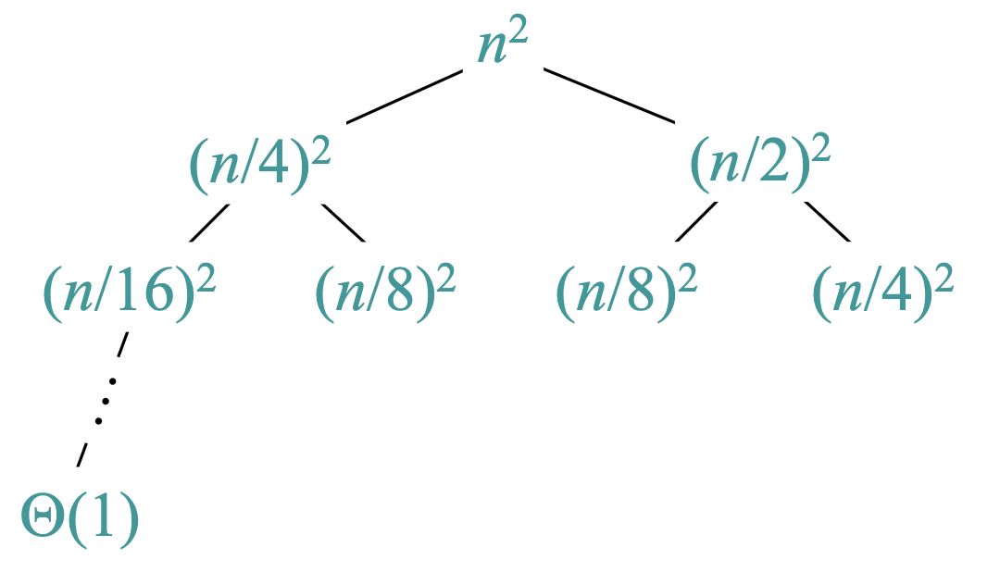
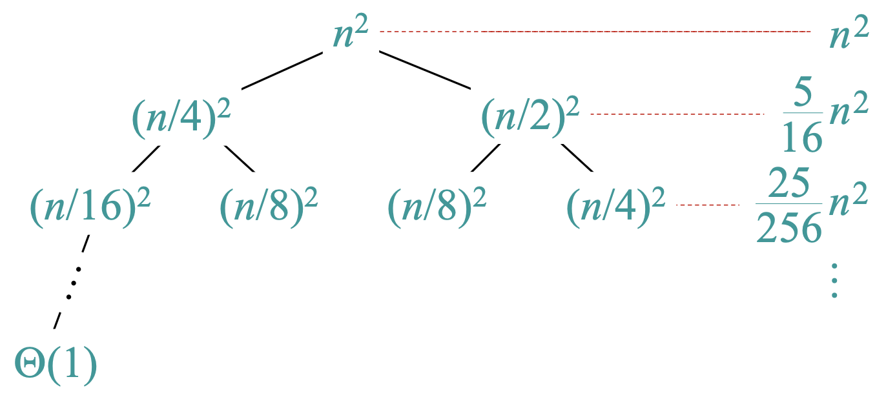
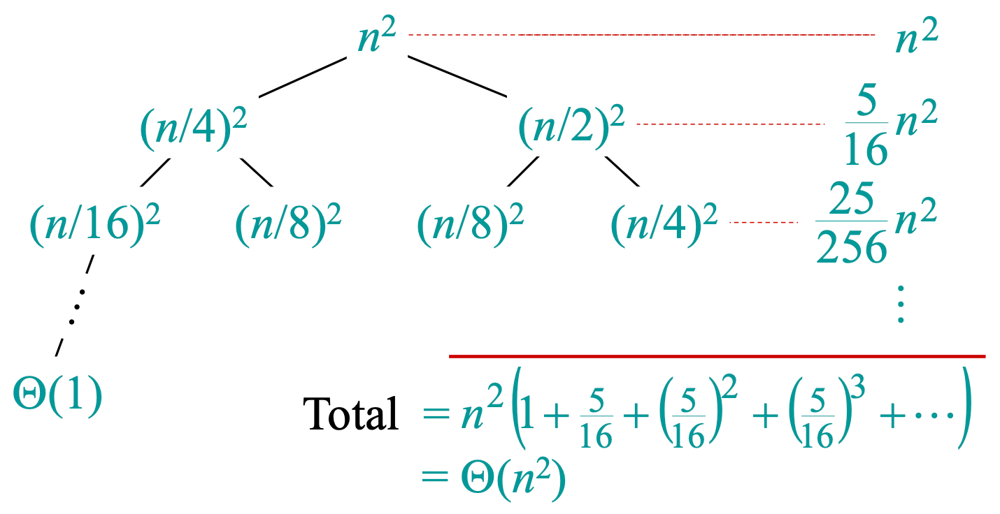

lecture #4
Are the following statements True or False?
Merge Sort is a classic recursive, divide-and-conquer algorithm.
Its running time can be described by the recurrence relation:
$$T(n) = 2T(\frac{n}{2}) + cn$$This solves to a running time of $T(n) = \Theta(n \log n)$.
// Input: Array A, indices p and r
// Output: Sorted subarray A[p:r]
Algorithm Merge-Sort(A, p, r)
if p >= r then
return
end
q ← floor((p+r)/2)
Merge-Sort(A, p, q)
Merge-Sort(A, q+1, r)
Merge(A, p, q, r)
Let's analyze the following recursive algorithm, which takes a real number a and an integer b.
Foo(a, b):
if b = 1 then
return a
end
else
if b is even then
x ← Foo(a, b/2)
return x * x
end
else
x ← Foo(a, (b-1)/2)
return a * x * x
end
end
Think for some time...
Foo(a, b):
if b = 1 then
return a // Base case
end
else
if b is even then
x ← Foo(a, b/2)
return x * x
end
else
x ← Foo(a, (b-1)/2)
return a * x * x
end
end
This is an efficient algorithm for exponentiation, calculating $a^b$.
To determine the running time of recursive algorithms like Merge Sort or Foo, we need to solve their recurrence relations. We will cover three primary methods:
This method converts the recurrence into a tree structure to help visualize the cost at each level of recursion.
The steps are:
Let's solve the following recurrence:
$$T(n) = T(n/4) + T(n/2) + n^2$$
The root represents the initial cost, $n^2$. It branches into subproblems of size $n/4$ and $n/2$.

We continue expanding the tree until we reach the base cases, which have a cost of $\Theta(1)$.
Now, let's sum the costs at each level.

The cost at each level forms a geometric progression.
The total cost is the sum of costs across all levels.
$$Total = n^2 \left( 1 + \frac{5}{16} + \left(\frac{5}{16}\right)^2 + \left(\frac{5}{16}\right)^3 + \dots \right)$$This is a converging geometric series, which is bounded by a constant. The first term dominates.
$$Total = \Theta(n^2)$$Draw the recursion tree for the following recurrence:
$$T(n) = 4T(n/2) + n$$Questions to consider: